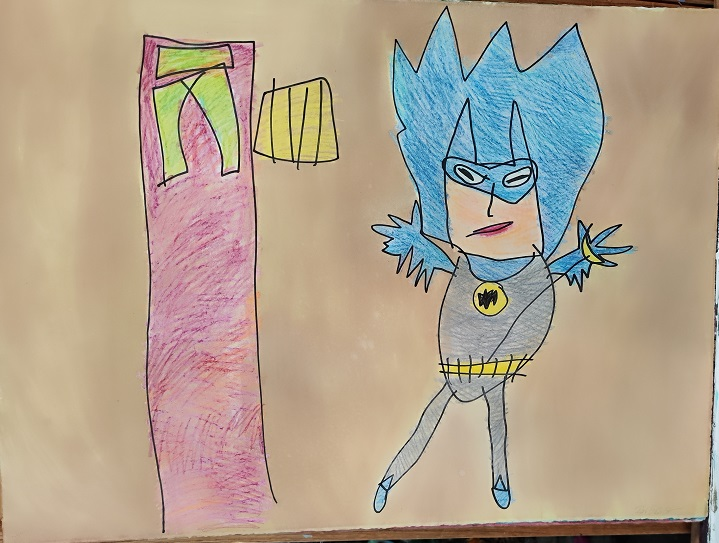

- Title: My Kid Could Do That - Surprising Batman
- Date: 1991
- Medium: Crayon, watercolor, and ink
- Dimensions: 23 × 30 inches
- Work ID: RE-015557
- Signature: Signed “ENGLISH,” lower right; signed “Batman”; signed “Ron English” on back.
- Provenance: Private collection